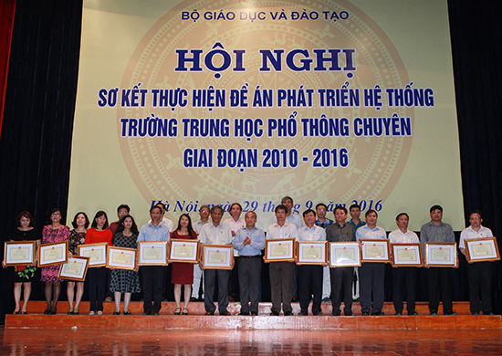

Hội nghị Sơ kết thực hiện đề án phát triển hệ thống trường trung học phổ thông chuyên giai đoạn 2010 – 2016

Lần cập nhật cuối lúc Thứ tư, 05 Tháng 10 2016 11:06 Viết bởi Administrator Thứ năm, 29 Tháng 9 2016 00:00
Ngày 24/6/2010, Thủ tướng Chính phủ ký quyết định số 959/QĐ-TTg phê duyệt Đề án phát triển hệ thống trường THPT chuyên giai đoạn 2010- 2020 với số tiền hơn 2 nghìn tỷ đồng. Sau 5 năm triển khai thực hiện, ngày 29/9, tại Hà Nội, Bộ GD&ĐT đã sơ kết thực hiện Đề án, với đánh giá ban đầu: Khối trường này đã có sự phát triển mạnh mẽ.
Thứ trưởng Nguyễn Vinh Hiển nhấn mạnh: Đề án phát triển hệ thống trường THPT chuyên, từ khi xây dựng đến giờ có thể nói chưa phải điều chỉnh gì. Các ý tưởng, giải pháp đặt ra với 6 mục tiêu phát triển bền vững từ năm 2010 đến bây giờ đã khẳng định là đúng, có thay đổi cũng là làm phong phú thêm các giải pháp phát triển.
Hệ thống giáo dục chuyên phát triển mạnh mẽ
Báo cáo chung về Đề án trong giai đoạn từ 2010 đến nay, TS. Vũ Đình Chuẩn, Vụ trưởng Vụ Giáo dục Trung học (Bộ GD&ĐT) cho biết: Cả 6 mục tiêu đặt ra trong Đề án đều đạt được những kết quả hết sức cụ thể.
Theo TS Vũ Đình Chuẩn, mạng lưới trường chuyên được hoàn thiện hơn, quy mô trường lớp và học sinh được mở rộng, cơ sở vật chất, trang thiết bị dạy học của các trường chuyên được tăng cường. Chất lượng đội ngũ cán bộ quản lý, giáo viên trường chuyên chuyển biến đáng kể về chất lượng.
Về chất lượng giáo dục cũng có chuyển biến mạnh, thể hiện qua kết quả xếp loại 2 mặt giáo dục, kết quả thi ĐH, kết quả thi Olympic khu vực, quốc tế, thi Intel ISEF trong các năm qua. Việc nâng trình độ ngoại ngữ, tin học cho giáo viên và học sinh được các trường chú trọng; việc thí điểm dạy học một số môn khoa học tự nhiên bằng tiếng Anh đã đạt được những kết quả ban đầu; việc tổ chức cho học sinh nghiên cứu khoa học, tham gia cuộc thi khoa học, kỹ thuật học sinh trung học cấp quốc gia được các trường chuyên đưa vào nhiệm vụ hàng năm…
Tuy nhiên, bên cạnh kết quả trên, theo TS Vũ Đình Chuẩn, hệ thống trường chuyên vẫn còn một số hạn chế liên quan đến cơ sở vật chất; năng lực ngoại ngữ của cán bộ quản lý, giáo viên, học sinh. Một số trường chưa chứng tỏ được vai trò hình mẫu cũng như chưa huy động nguồn lực từ hợp tác quốc tế… Những điểm hạn chế này sẽ được cải thiện trong Đề án phát triển giai đoạn tới.
Cần tiếp tục đào tạo toàn diện
Thứ trưởng Nguyễn Vinh Hiển trao bằng khen cho tập thể có thành tích xuất sắc trong triển khai thực hiện Đề án phát triển hệ thống trường THPT chuyên giai đoạn 2010 – 2016
Chủ trì Hội nghị, Thứ trưởng Bộ GD&ĐT Nguyễn Vinh Hiển đã chia sẻ niềm vui với các trường chuyên trong giai đoạn vừa qua đồng thời nhấn mạnh: Trong cả hệ thống giáo dục nói chung, cũng như trong hệ thống trường chuyên nói riêng, quan niệm toàn diện có nghĩa là chúng ta phát triển hài hoà tất cả các mặt, mà chúng ta hay gộp thành đức - trí - thể - mỹ ai cũng được phát triển những mặt đó để đạt mục tiêu chung về giáo dục phổ thông, để cho con người được sống bình thường trong xã hội, và để mình không bị khiếm khuyết.
Nhưng trên cơ sở đó, nhất định phải phát triển được năng khiếu riêng của từng người. Như vậy mới phù hợp với mục tiêu giáo dục chung là phát triển hài hoà, toàn diện học sinh, trên cơ sở phát huy tốt nhất tiềm năng riêng của từng em học sinh.
“Chúng ta đừng trách các trường chuyên để học sinh học lệch. Lệch, nhưng là để nâng lên chứ không phải lệch để nghiêng về bên kia, mà trên mặt bằng có điểm nhô lên. Có em nhô lên về năng khiếu này có em nhô lên về năng khiếu khác trên cơ sở mặt bằng ấy. Cái này chúng ta cũng cần hiểu cho đúng” – Thứ trưởng Nguyễn Vinh Hiển nhấn mạnh.
Về đội ngũ giáo viên trường chuyên, Thứ trưởng cũng cho rằng họ rất giỏi. Tuy nhiên cũng đừng mong giáo viên mình giỏi hơn học sinh. “Giáo viên trường chuyên là phải làm cho học sinh giỏi hơn mình, mặc dù có thể mình rất giỏi. Thế mới là “hậu sinh khả uý”.
Thứ trưởng Nguyễn Vinh Hiển cũng nói thêm về việc đầu tư cơ sở vật chất cho các trường chuyên: Trong xã hội có nhiều ý kiến nói rằng, chúng ta đầu tư vào cho một số trường như thế này chưa có hiệu quả, và không phù hợp với chủ trương chung của chúng ta. Cái này có thể phải xem xét kỹ hơn một chút. Chúng ta không thể nào đầu tư dàn trải tất cả được, nhất là khi nước mình còn nghèo, điều kiện đầu tư chính cho tất cả mọi người cũng khó. Vì thế cần có đầu tư riêng cho những chỗ có thể phát huy làm mũi nhọn.
Phấn đấu là hình mẫu của các trường THPT
Nhìn lại quá trình thực hiện Đề án, Thứ trưởng Nguyễn Vinh Hiển chia sẻ: Có một số mục tiêu khi xây dựng Đề án, chúng ta thấy hơi “lãng mạn” như giải pháp dạy và học bằng tiếng nước ngoài, hay giải pháp liên kết các trường THPT chuyên với các trường nước ngoài… Rồi có một việc khó ngay trước mắt lúc bấy giờ, đó là làm sao thay đổi nhận thức, làm sao trường THPT chuyên không phải là trường chỉ đào tạo học sinh giỏi, cũng không phải trường lấy mục tiêu đào tạo học sinh đỗ đạt là chính….
Những việc này, khi bắt đầu thực hiện có thể thấy khó nhưng dần dần đều đúng cả. Trường THPT chuyên là trường trên cơ sở giáo dục toàn diện và phát triển bồi dưỡng học sinh có năng khiếu, đào tạo nguồn lực chất lượng cao, nhân tài cho đất nước. Và trường THPT chuyên phải là hình mẫu cho các trường THPT khác về điều kiện cơ sở vật chất, đội ngũ giáo viên, các hoạt động sinh hoạt chuyên môn của cả thầy và trò. Những cái này, trong giai đoạn tới chúng ta cần phải thực hiện tốt hơn.
- 04/03/2017 16:05 - Kết quả cuộc thi Olympic đi du học Nga môn Vật lý …
- 16/12/2016 08:45 - Thư ngỏ gửi các em cựu học sinh trường THPT Chuyên…
- 21/11/2016 08:43 - Về việc tham gia cuộc thi Giao thông học đường năm…
- 11/11/2016 08:06 - Thiết kế xây dựng tượng cụ Nguyễn Bỉnh Khiêm
- 06/10/2016 07:35 - Đề thi minh họa kỳ thi THPT quốc gia năm 2017
- 08/09/2016 00:00 - Lễ ký kết hợp tác giữa Trường THPT Chuyên Nguyễn B…
- 04/06/2016 07:51 - Danh sách thí sinh thi tuyển sinh 10 THPT Chuyên n…
- 29/05/2016 09:41 - Danh sách thí sinh tuyển sinh 10 THPT Chuyên năm h…
- 12/05/2016 08:29 - Thư ngỏ tuyển sinh 10 THPT Chuyên Nguyễn Bỉnh Khiê…
- 21/04/2016 09:34 - Ưu tiên tuyển thẳng học sinh giỏi các trường chuyê…